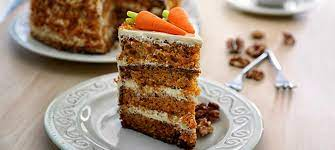

Ajiaco

El ajiaco colombiano es una de las sopas mas ricas y completas, no solo en el pais cafetero, sino en toda Latinoamerica. Color, textura, ingredientes criollos, todo en un menu que lejos de ser una simple receta, es reflejo de una rica historia culinaria.
Ver Ingredientes y su preparacionPasta con Champiñones
Las pastas con champiñones son un tipo de pasta italiana elaborada con harina de grano duro y agua. Tiene forma de delgada cuerda larga, sección circular y un tamaño aproximado entre 25 y 30 centímetros. Se trata de uno de los ingredientes más representativos de la gastronomía italiana, cuya popularidad trasciende a otros países
Ver Ingredientes y su preparacionTorta de zanahoria
El pastel de zanahoria, tarta de zanahoria o torta de zanahoria es un pastel dulce con zanahoria machacada mezclada en la masa. La zanahoria se ablanda en el proceso de cocción, y la tarta suele tener una textura densa y suave. Las zanahorias mejoran el sabor, textura y apariencia del pastel
Ver Ingredientes y su preparacion